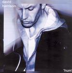

Home Artist links Label link

David Harrison - Hum
| Artist: | David Harrison |
| Title: | Hum |
| Label: | Dodge Records DODGECD5 |
| Length(s): | minutes |
| Year(s) of release: | 2005 |
| Month of review: | [05/2006] |
Sample this album in MP3
The music
David Harrison is a singersongwriter. His album counts eleven tracks with three
bonus tracks added. He alternates between the usual mid-tempo song and some more
heavier tunes such as It's Not Your Scene and She Loves The Sun. Only twice does he cross the four minute mark (and one of these is an urban mix). He has a rather high and not unpleasant voice, although at some points it can sound a bit thin. As usual, some songs come out well, other come out less than well. Ones I liked included opener Luminous Circles, the open sounding Maganda Khar, and the somewhat untypical Sumatra Kamasutra (reminding me of Talk Talk both melodically as well as vocally), Megan
while a song like Lucky Clover is too romantic for my tastes, and Lost In The Ocean and Get Out Of My Hair hold too little appeal. The album has a strong middle section, but before and after, the songs hold too little surprise to keep my attention. If you are looking for comparisons close to home, I guess Damian Wilson's solo album(s) is close, but the music of Damian is strongly determined by his emotional vocal presence. Stilistically, this is not this website's cup of tea, and although the album has its merit, there are plenty of fish in the sea in this genre. Of course,
in this genre, one never knows how the ball of success is going to roll.
© Jurriaan Hage